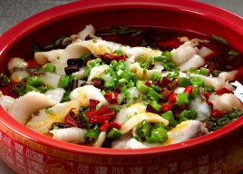
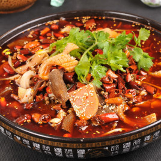
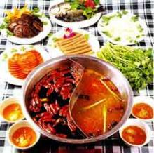

水煮鱼：水煮鱼也称为江水煮江鱼、水煮鱼片，最早流行于重庆市渝北区翠云乡。水煮鱼通常由新鲜草鱼、豆芽、辣椒等食材制作而成。“油而不腻、辣而不燥、麻而不苦、肉质滑嫩”是其特色。
毛血旺：毛血旺以鸭血为制作主料，烹饪技巧以煮菜为主，口味属于麻辣味。起源于重庆，流行于重庆和西南地区，是一道著名的传统菜式。这道菜是将生血旺现烫现吃，且毛肚杂碎为主料，遂得名。
重庆火锅：重庆火锅，又称为毛肚火锅或麻辣火锅，是中国传统饮食方式，起源于明末清初的重庆嘉陵江畔、朝天门等码头船工纤夫的粗放餐饮方式，原料主要是牛毛肚、猪黄喉、鸭肠、牛血旺等。